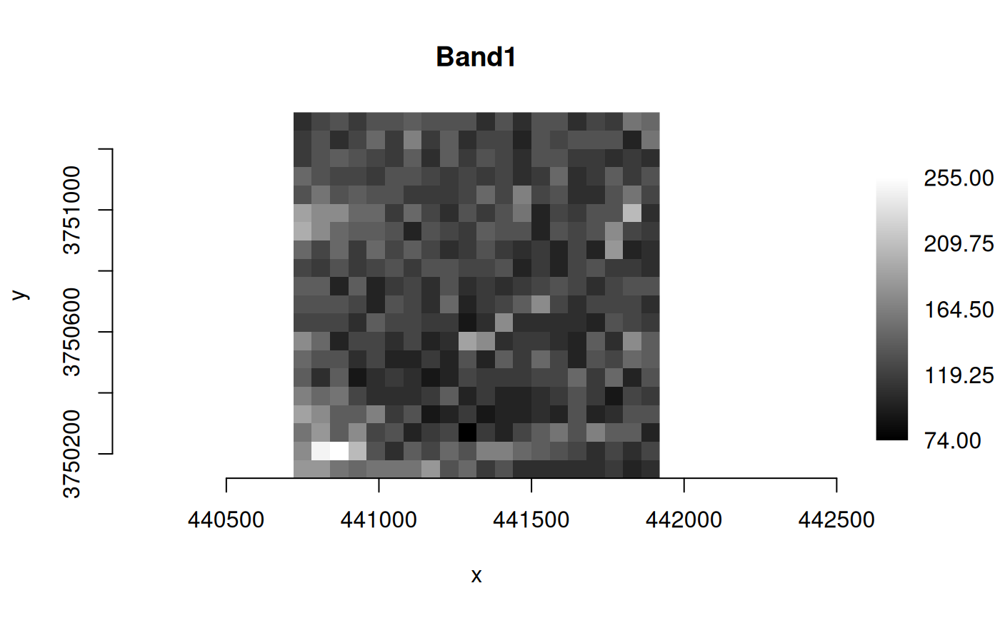
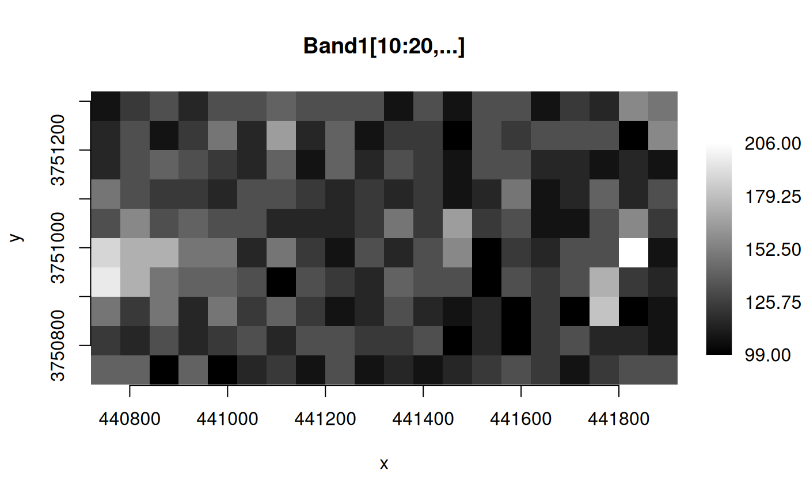
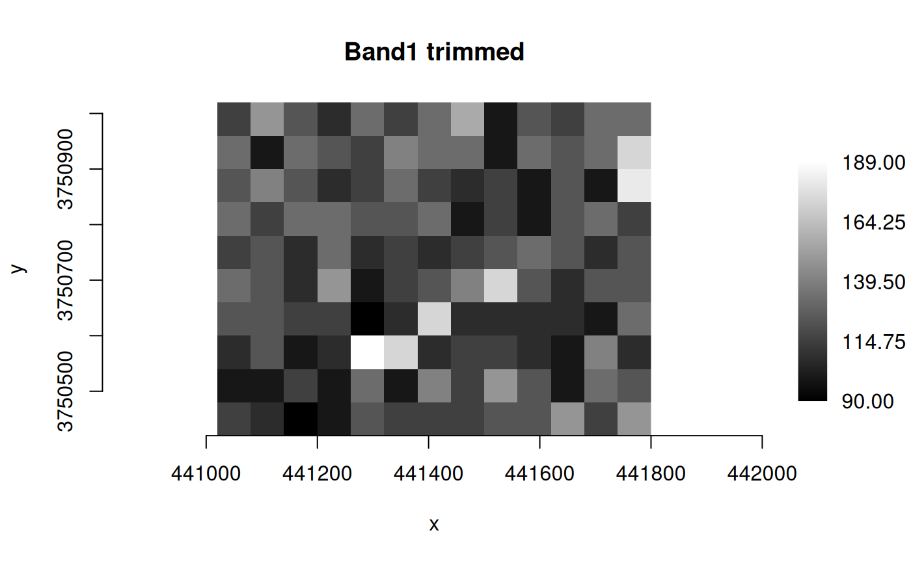
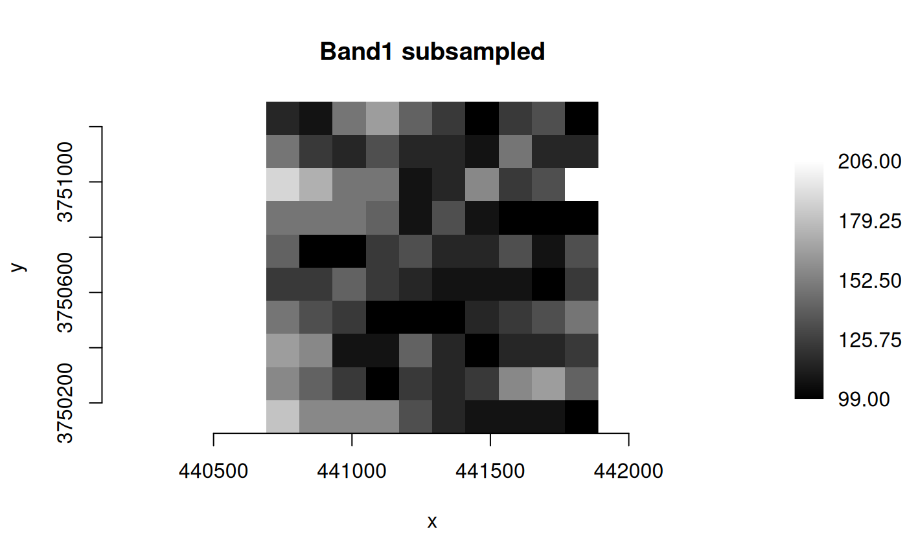

Convert multidimensional data between different formats, and subset
Source:R/RcppExports.R
mdim_translate.Rdmdim_translate() is an interface to the gdalmdimtranslate
command-line utility (see
https://gdal.org/en/stable/programs/gdalmdimtranslate.html).
This function converts multidimensional data between different formats and
performs subsetting. Requires GDAL >= 3.2.
Usage
mdim_translate(
src_dsn,
dst_dsn,
output_format = "",
creation_options = NULL,
array_specs = NULL,
group_specs = NULL,
subset_specs = NULL,
scaleaxes_specs = NULL,
allowed_drivers = NULL,
open_options = NULL,
strict = FALSE,
quiet = FALSE
)Arguments
- src_dsn
Character string giving the name of the source multidimensional raster dataset (e.g., file, VSI path).
- dst_dsn
Character string giving the name of the destination multidimensional raster dataset (e.g., file, VSI path).
- output_format
Character string giving the output format (driver short name). This can be a format that supports multidimensional output (such as NetCDF: Network Common Data Form, Multidimensional VRT), or a "classic" 2D format, if only one single 2D array results from the other specified conversion operations. When this option is not specified (i.e., empty string
""), the format is guessed when possible from the extension ofdst_dsn.- creation_options
Optional character vector of format-specific creation options as
"NAME=VALUE"pairs. A list of options supported for a format can be obtained withgetCreationOptions(), but the documentation for the format is the definitive source of information on driver creation options (see https://gdal.org/en/stable/drivers/raster/index.html). Array-level creation options may be passed by prefixing them withARRAY:(see Details).- array_specs
Optional character vector of one or more array specifications, instead of converting the whole dataset (see Details).
- group_specs
Optional character vector of one or more array specifications, instead of converting the whole dataset (see Details).
- subset_specs
Optional character vector of one or more subset specifications, that perform trimming or slicing along a dimension, provided that it is indexed by a 1D variable of numeric or string data type, and whose values are monotonically sorted (see Details).
- scaleaxes_specs
Optional character string for a scale-axes specification, that apply an integral scale factor to one or several dimensions, i.e., extract 1 value every N values (without resampling) (see Details).
- allowed_drivers
Optional character vector of driver short names that must be considered when opening
src_dsn. It is generally not necessary to specify it, but it can be used to skip automatic driver detection, when it fails to select the appropriate driver.- open_options
Optional character vector of format-specific dataset open options for
src_dsnas"NAME=VALUE"pairs.- strict
Logical value,
FALSE(the default) some failures during the translation are tolerated, such as not being able to write group attributes. If set toTRUE, such failures will cause the process to fail.- quiet
Logical value, set to
TRUEto disable progress reporting. Defaults toFALSE.
Value
Logical value indicating success (invisible TRUE, output written
to dst_dsn). An error is raised if the operation fails.
Details
Array creation options
Array creation options must be prefixed with ARRAY:. The scope may be
further restricted to arrays of a certain dimension by adding
IF(DIM={ndims}): after ARRAY:. For example,
"ARRAY:IF(DIM=2):BLOCKSIZE=256,256" will restrict BLOCKSIZE=256,256 to
arrays of dimension 2. Restriction to arrays of a given name is done with
adding IF(NAME={name}): after ARRAY:. {name} can also be a fully
qualified name. A non-driver specific array option, "AUTOSCALE=YES" can
be used to ask (non indexing) variables of type Float32 or Float64 to be
scaled to UInt16 with scale and offset values being computed from the
minimum and maximum of the source array. The integer data type used can be
set with "AUTOSCALE_DATA_TYPE=Byte|UInt16|Int16|UInt32|Int32".
array_specs
Instead of converting the whole dataset, select one or more arrays, and possibly perform operations on them. One or more array specifications can be given as elements of a character vector.
An array specification may be just an array name, potentially using a fully
qualified syntax ("/group/subgroup/array_name"). Or it can be a
combination of options with the syntax:
"name={src_array_name}[,dstname={dst_array_name}][,resample=yes][,transpose=[{axis1},{axis2},...][,view={view_expr}]""The following options are processed in that order:
resample=yesasks for the array to run throughGDALMDArray::GetResampled().[{axis1},{axis2},...]is the argument ofGDALMDArray::Transpose(). For example,transpose=[1,0]switches the axis order of a 2D array.{view_expr}is the value of theviewExprargument ofGDALMDArray::GetView(). When specifying aview_exprthat performs a slicing or subsetting on a dimension, the equivalent operation will be applied to the corresponding indexing variable.
group_specs
Instead of converting the whole dataset, select one or more groups, and possibly perform operations on them. One or more group specifications can be given in a character vector, to operate on different groups. If only one group is specified, its content will be copied directly to the target root group. If several are specified, they are copied under the target root group.
A group specification may be just a group name, potentially using a fully
qualified syntax ("/group/subgroup/subsubgroup_name"). Or it can be a
combination of options with the syntax:
subset_specs
Perform subsetting (trimming or slicing) operations along dimensions, provided that the dimension is indexed by a 1D variable of numeric or string data type, and whose values are monotonically sorted. One or more subset specifications can be given in a character vector. A subset specification string follows exactly the OGC WCS 2.0 KVP encoding for subsetting.
Syntax is dim_name(min_val,max_val) or dim_name(sliced_val). The first
syntax will subset the dimension dim_name to values in the
[min_val,max_val] range. The second syntax will slice the dimension
dim_name to value sliced_val (and this dimension will be removed from
the arrays that reference to it)
Using a subset specification is incompatible with specifying a view option
in array_specs.
scaleaxes_specs
Applies an integral scale factor to one or several dimensions, i.e., extract 1 value every N values (without resampling). A scale-axes specification string follows exactly the syntax of the KVP encoding of the SCALEAXES parameter of OGC WCS 2.0 Scaling Extension, but limited to integer scale factors.
Syntax is a character string of the form:
Using a scale-axes specification is incompatible with specifying a view
option in array_specs.
Examples
f_src <- system.file("extdata/byte.nc", package="gdalraster")
## COMPRESS option for MDArray creation
opt <- NULL
if (isTRUE(gdal_get_driver_md("netCDF")$NETCDF_HAS_HDF4 == "YES"))
opt <- "ARRAY:IF(NAME=Band1):COMPRESS=DEFLATE"
f_dst <- tempfile(fileext = ".nc")
mdim_translate(f_src, f_dst, creation_options = opt)
#> 0...10...20...30...40...50...60...70...80...90...100 - done.
(ds <- mdim_as_classic(f_dst, "Band1", 1, 0))
#> C++ object of class GDALRaster
#> Driver :
#> DSN :
#> Dim : 20, 20, 1
#> CRS : NAD27 / UTM zone 11N (EPSG:26711)
#> Res : 60.000000, 60.000000
#> Bbox : 440720.000000, 3750120.000000, 441920.000000, 3751320.000000
plot_raster(ds, interpolate = FALSE, legend = TRUE, main = "Band1")

ds$close()
## slice along the Y axis with array view
f_dst2 <- tempfile(fileext = ".nc")
mdim_translate(f_src, f_dst2, array_specs = "name=Band1,view=[10:20,...]")
#> 0...10...20...30...40...50...60...70...80...90...100 - done.
(ds <- mdim_as_classic(f_dst2, "Band1", 1, 0))
#> C++ object of class GDALRaster
#> Driver :
#> DSN :
#> Dim : 20, 10, 1
#> CRS : NAD27 / UTM zone 11N (EPSG:26711)
#> Res : 60.000000, 60.000000
#> Bbox : 440720.000000, 3750720.000000, 441920.000000, 3751320.000000
plot_raster(ds, interpolate = FALSE, legend = TRUE,
main = "Band1[10:20,...]")

ds$close()
## trim X and Y by subsetting
f_dst3 <- tempfile(fileext = ".nc")
subsets <- c("x(441000,441800)", "y(3750400,3751000)")
mdim_translate(f_src, f_dst3, subset_specs = subsets)
#> 0...10...20...30...40...50...60...70...80...90...100 - done.
(ds <- mdim_as_classic(f_dst3, "Band1", 1, 0))
#> C++ object of class GDALRaster
#> Driver :
#> DSN :
#> Dim : 13, 10, 1
#> CRS : NAD27 / UTM zone 11N (EPSG:26711)
#> Res : 60.000000, 60.000000
#> Bbox : 441020.000000, 3750420.000000, 441800.000000, 3751020.000000
plot_raster(ds, interpolate = FALSE, legend = TRUE,
main = "Band1 trimmed")

ds$close()
## subsample along X and Y
f_dst4 <- tempfile(fileext = ".nc")
mdim_translate(f_src, f_dst4, scaleaxes_specs = "x(2),y(2)")
#> 0...10...20...30...40...50...60...70...80...90...100 - done.
(ds <- mdim_as_classic(f_dst4, "Band1", 1, 0))
#> C++ object of class GDALRaster
#> Driver :
#> DSN :
#> Dim : 10, 10, 1
#> CRS : NAD27 / UTM zone 11N (EPSG:26711)
#> Res : 120.000000, 120.000000
#> Bbox : 440690.000000, 3750090.000000, 441890.000000, 3751290.000000
plot_raster(ds, interpolate = FALSE, legend = TRUE,
main = "Band1 subsampled")

ds$close()